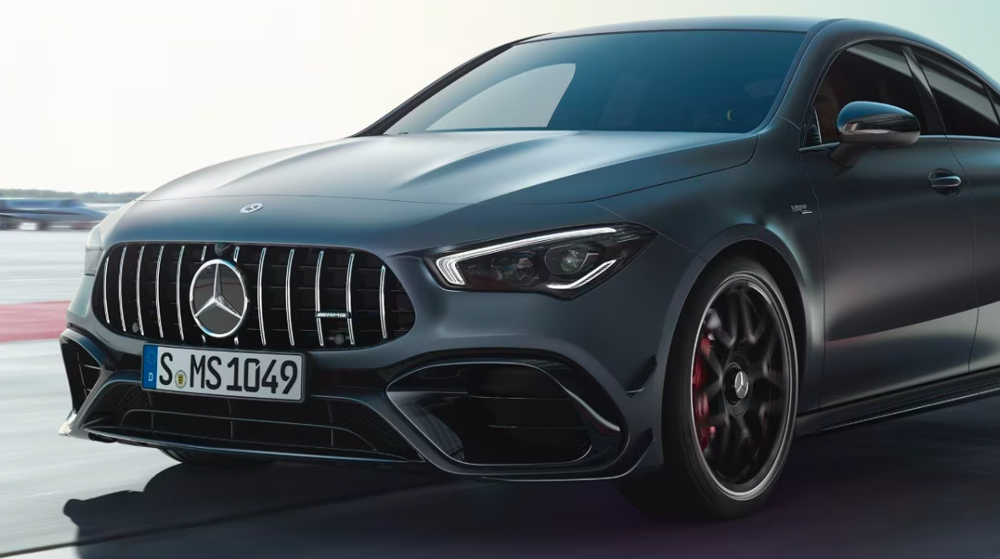
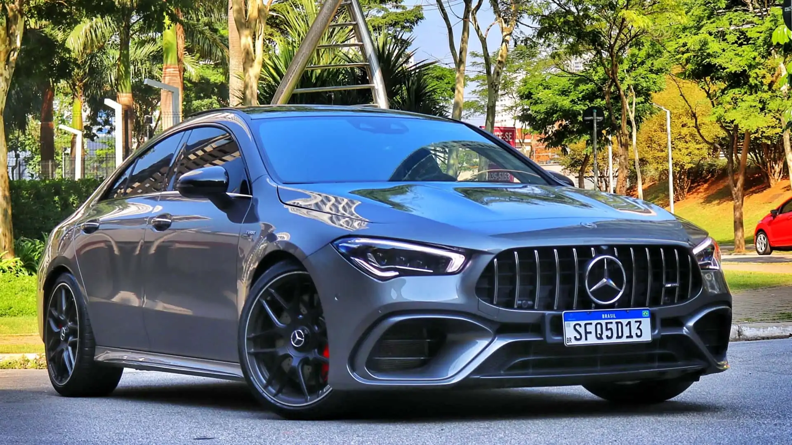
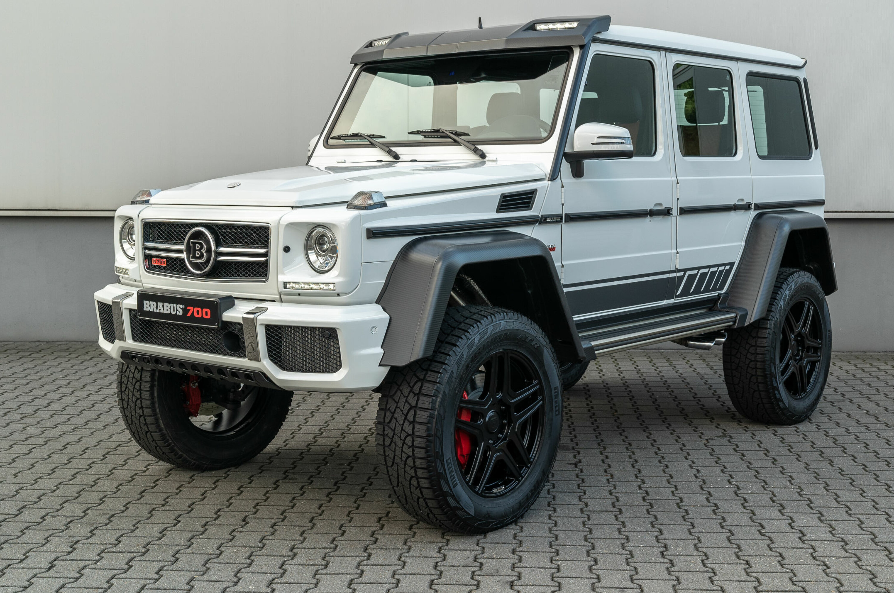

Serviços Mercedes-Benz
Serviços Mercedes-Benz



Mercedes-Benz ServiceCare (Contratos de Manutenção)
- Contratos de manutenção pré-pagos que cobrem as revisões do seu Mercedes-Benz por um período determinado, incluindo peças genuínas e mão de obra especializada da concessionária.
- Oferece tranquilidade e previsibilidade dos custos de manutenção, além de assegurar a qualidade do serviço e a valorização do veículo.
Mercedes-Benz SmallRepair (Pequenos Reparos)
- Procedimento inovador para reparar pequenos danos como arranhões, amassados e batidas de pedra de forma rápida e econômica, sem a necessidade de substituir peças inteiras.
- Mantém a qualidade original Mercedes-Benz com um custo justo e menor tempo de serviço.
Inspeção de Pneus Mercedes-Benz
- Verificações periódicas da condição dos pneus, incluindo pressão, desgaste e alinhamento, realizadas por técnicos especializados para garantir a segurança e a dirigibilidade do seu veículo.
- Essencial para otimizar a vida útil dos pneus e prevenir acidentes.
Limpeza e Higienização do Ar Condicionado com Certificação ECARF
- Serviço de limpeza do sistema de ar condicionado que garante o funcionamento adequado, combinado com a troca do filtro do compartimento interno.
- Previne a formação de odores desagradáveis e assegura a qualidade do ar que você respira no seu Mercedes-Benz.
Serviços de Baterias Originais Mercedes-Benz
- Venda e instalação de baterias genuínas Mercedes-Benz, projetadas especificamente para atender às necessidades elétricas do seu veículo.
- Garante o desempenho ideal do sistema elétrico e a durabilidade da bateria.
Serviços de Alinhamento de Direção com Tecnologia Mercedes-Benz
- Utilização de equipamentos de alta precisão para alinhar a direção do seu Mercedes-Benz, garantindo a estabilidade, o conforto e a segurança na condução.
- Previne o desgaste irregular dos pneus e melhora a dirigibilidade do veículo.
Serviços de Balanceamento de Rodas com Equipamentos Mercedes-Benz
- Balanceamento das rodas realizado com equipamentos específicos que garantem o equilíbrio perfeito do conjunto roda/pneu.
- Elimina vibrações e proporciona uma condução mais suave e confortável, além de proteger os componentes da suspensão e os pneus.
Serviços de Troca de Óleo e Filtros Originais Mercedes-Benz
- Utilização de óleos lubrificantes e filtros genuínos Mercedes-Benz, que atendem às especificações exatas do motor do seu veículo.
- Essencial para garantir a longevidade e o desempenho ideal do motor.